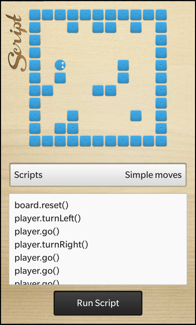

Files:
The Script Game example shows how to extend a C++ application with scripting functionality.

In this example we'll learn how to use the QScriptEngine and QScriptValue classes to export C++ objects into a scripting environment, where user written JavaScript scripts can interact with them.
In this example we have a maze with a player inside. The player object is exported to the scripting environment under the identifier 'player'. The user can now move the player by executing JavaScript code snippets like 'player.turnLeft()' to turn the player or 'player.go()' to move the player by one step in the current direction.
The UI of this sample application consists of the following components:
The business logic of the application is encapsulated in the class GameController, which is exported to the UI as '_gameController'.
The main.qml contains the Maze object (implemented in Maze.qml)
// The maze board Maze { horizontalAlignment: HorizontalAlignment.Center verticalAlignment: verticalAlignment.Center }
and the TextField and Button to enter and run the script.
TextArea { id: scriptContent horizontalAlignment: HorizontalAlignment.Fill layoutProperties: StackLayoutProperties { spaceQuota: 1 } hintText: "" } Button { horizontalAlignment: HorizontalAlignment.Center text: qsTr ("Run Script") onClicked: _gameController.run(scriptContent.text) }
Whenever the user clicks the 'Run Script' button, the run() slot of the GameController object is invoked with the content of the TextField as parameter.
// The board where the player object can be moved Container { objectName: "board" layoutProperties: AbsoluteLayoutProperties { positionX: 50 positionY: 50 } layout: AbsoluteLayout {} preferredWidth: 450 preferredHeight: 450 }
The Maze.qml contains a Container with the 'objectName' property set, so that it can be looked up from within C++. The player and the walls will be placed inside this container.
The Player class encapsulates the business logic of a player on the maze board. It provides methods to change direction and position of the player.
class Player : public QObject, public QScriptable { Q_OBJECT public: /** * The constructor takes the Board object, where the player should play on, as parameter */ Player(Board *board, QObject *parent = 0); ~Player(); public Q_SLOTS: // This method can be called to reset the Player object to it's initial state void reset(); // This method turns the player to the left by 90 degree void turnLeft(); // This method turn the player to the right by 90 degree void turnRight(); // This method moves the player by on step in its current direction void go(); private: /** * Describes the possible directions the player can move to */ enum Direction { Up, Right, Down, Left }; // The Board object the player is playing on Board *m_board; // The tile that represents the player in the UI bb::cascades::ImageView *m_playerTile; // The direction the player is currently moving Direction m_currentDirection; // The current position of the player on the board QPoint m_currentPosition; };
The Player class also stores a reference to the UI object (ImageView) that represents the player on the screen.
Inside the constructor we create the ImageView, load the player image and add it to the Container that acts as board.
Player::Player(Board *board, QObject *parent) : QObject(parent) , m_board(board) , m_playerTile(new ImageView) , m_currentDirection(Down) , m_currentPosition(0, 0) { // Initialize the player tile and add it to the board container m_playerTile->setPreferredWidth(s_tileSize); m_playerTile->setPreferredHeight(s_tileSize); m_playerTile->setImage(Image(QUrl("asset:///images/player.png"))); m_board->board()->add(m_playerTile); /** * Ensure that x/y position is really 0, otherwise using the translationX/translationY properties * does not work as expected. */ AbsoluteLayoutProperties *properties = qobject_cast<AbsoluteLayoutProperties*>(m_playerTile->layoutProperties()); if (properties) { properties->setPositionX(0); properties->setPositionY(0); } }
If the turnLeft() method is invoked, we rotate the ImageView to the left by 90 degree and update the direction variable depending on the current direction.
void Player::turnLeft() { // Just rotate the tile, in a later version we can use different images for each direction m_playerTile->setRotationZ(m_playerTile->rotationZ() - 90); // Update the direction depending on the current direction switch (m_currentDirection) { case Up: m_currentDirection = Left; break; case Right: m_currentDirection = Up; break; case Down: m_currentDirection = Right; break; case Left: m_currentDirection = Down; break; } }
If the turnLeft() method is invoked, we rotate the ImageView to the right by 90 degree and update the direction variable depending on the current direction.
void Player::turnRight() { // Just rotate the tile, in a later version we can use different images for each direction m_playerTile->setRotationZ(m_playerTile->rotationZ() + 90); // Update the direction depending on the current direction switch (m_currentDirection) { case Up: m_currentDirection = Right; break; case Right: m_currentDirection = Down; break; case Down: m_currentDirection = Left; break; case Left: m_currentDirection = Up; break; } }
If the go() method is invoked, calculate the new position depending on our current position and the current direction. If the canMoveTo() method of the Board object returns true (that means there is no wall) for the new position, we update our position and also adapt the position of the ImageView on screen.
void Player::go() { // Update the current position of the player depending on the current direction switch (m_currentDirection) { case Up: if (m_board->canMoveTo(m_currentPosition.x(), m_currentPosition.y() - 1)) { m_currentPosition.setY(m_currentPosition.y() - 1); } break; case Right: if (m_board->canMoveTo(m_currentPosition.x() + 1, m_currentPosition.y())) { m_currentPosition.setX(m_currentPosition.x() + 1); } break; case Down: if (m_board->canMoveTo(m_currentPosition.x(), m_currentPosition.y() + 1)) { m_currentPosition.setY(m_currentPosition.y() + 1); } break; case Left: if (m_board->canMoveTo(m_currentPosition.x() - 1, m_currentPosition.y())) { m_currentPosition.setX(m_currentPosition.x() - 1); } break; } // Update the position of the player tile on screen m_playerTile->setTranslationX(m_currentPosition.x() * s_tileSize); m_playerTile->setTranslationY(m_currentPosition.y() * s_tileSize); }
The Board class contains all the business logic for handling the maze board. It generates a distribution of blocks on the maze (either static or randomly as configurable via the staticBlockDistribution property) and it also generates the tiles (ImageViews) that are displayed in the UI.
class Board : public QObject { Q_OBJECT // The property that defines whether the block distribution is done statically or randomly Q_PROPERTY(bool staticBlockDistribution READ staticBlockDistribution WRITE setStaticBlockDistribution NOTIFY staticBlockDistributionChanged) public: // We take the Container that represents the maze board as parameter Board(bb::cascades::Container *boardContainer, QObject *parent = 0); /** * This method returns whether a player can move to the given position. * The position is given in logical coordinates (0-9). */ bool canMoveTo(int x, int y) const; // The accessor methods for the block distribution property bool staticBlockDistribution() const; void setStaticBlockDistribution(bool value); bb::cascades::Container *board() const; public Q_SLOTS: /** * This method will reset the maze board and regenerate all blocks. * If the staticBlockDistribution is 'false', the blocks will be placed randomly. */ void reset(); Q_SIGNALS: // The change notification signal for the block distribution property void staticBlockDistributionChanged(); private: // The Container object that represents the maze board in the UI bb::cascades::Container *m_board; // The list of block tiles that we created QVector<bb::cascades::Control*> m_blocks; // The map where we store the locations of the blocks inside the maze QVector<QVector<bool> > m_blockMap; // The block distribution property bool m_staticBlockDistribution; };
Inside the constructor we fill the board representation (a QVector<QVector<bool>>) with false to mark the complete board as empty. Later on we'll change the values to true at the positions where a wall is located.
Board::Board(bb::cascades::Container *boardContainer, QObject *parent) : QObject(parent) , m_board(boardContainer) , m_staticBlockDistribution(true) { // Initialize the random number generator so that we can use it for dynamic block distribution qsrand(QDateTime::currentDateTime().toMSecsSinceEpoch()); // Initialize the block map with 'false' for all cells -> no block available for (int x = 0; x < s_boardDimension; ++x) { m_blockMap << QVector<bool>(); for (int y = 0; y < s_boardDimension; ++y) { m_blockMap[x] << false; } } }
The canMoveTo() method returns whether there is no wall at the requested position and therefor we can move the player there.
bool Board::canMoveTo(int x, int y) const { // We can't move beyond the borders of the board if (x < 0 || x >= s_boardDimension || y < 0 || y >= s_boardDimension) return false; // We can't move to a coordinate where a block is located return (m_blockMap[x][y] == false); }
The reset() method rebuilds the layout of the maze. Depending on the 'staticBlockDistribution' property it places a couple of walls at fixed or random positions.
void Board::reset() { // Remove all block controls from the board... foreach(Control *block, m_blocks) { m_board->remove(block); } // ... and delete them qDeleteAll(m_blocks); m_blocks.clear(); // Clear our internal block map for (int x = 0; x < s_boardDimension; ++x) { for (int y = 0; y < s_boardDimension; ++y) { m_blockMap[x][y] = false; } } QVector<QPoint> blockCoordinates; if (m_staticBlockDistribution) { // For static block distribution we use hard-coded coordinates blockCoordinates << QPoint(2, 8) << QPoint(5, 5) << QPoint(5, 0) << QPoint(7, 0) << QPoint(7, 7) << QPoint(2, 7) << QPoint(1, 4) << QPoint(0, 5) << QPoint(1, 8) << QPoint(4, 0) << QPoint(6, 3) << QPoint(6, 4) << QPoint(2, 0) << QPoint(4, 5); } else { // For dynamic block distribution we use random coordinates for (int i = 0; i < 20; ++i) { const QPoint newPoint(qrand() % s_boardDimension, qrand() % s_boardDimension); if (blockCoordinates.contains(newPoint)) // contains a block already continue; if (newPoint == QPoint(0, 0)) // that's the starting place for the player continue; blockCoordinates << newPoint; } } // Generate the new blocks foreach (const QPoint position, blockCoordinates) { // Mark as occupied in blockMap m_blockMap[position.x()][position.y()] = true; // Create block tile ImageView *block = new ImageView(); block->setPreferredWidth(50); block->setPreferredHeight(50); block->setImage(Image(QUrl("asset:///images/block.png"))); block->setTranslationX(position.x() * s_tileSize); block->setTranslationY(position.y() * s_tileSize); // Add the block tile to the board container... m_board->add(block); // ... and store the object in our internal list, so that we can clean it up later on m_blocks << block; } }
The GameController is the central class of this application. It contains the objects that encapsulate the business logic (Board and Player) and also the QScriptEngine, which is responsible for changing the properties of the Board and Player objects according to the JavaScript input.
void GameController::reset() { // Reset the script engine /** * We have to delete the script engine with deleteLater() here, because this method is called * by the script engine itself, so we should not call 'delete m_scriptEngine' while it is used. */ m_scriptEngine->deleteLater(); m_scriptEngine = new QScriptEngine(this); /** * Create a wrapper object for the GameController itself since we want to * access its reset() method from within the scripts. */ QScriptValue scriptController = m_scriptEngine->newQObject(this); // Export it to the script engine environment m_scriptEngine->globalObject().setProperty("controller", scriptController); // Create a wrapper object for the Board object... QScriptValue scriptBoard = m_scriptEngine->newQObject(m_board); // ... and export it to the script engine environment m_scriptEngine->globalObject().setProperty("board", scriptBoard); // Create a wrapper object for the Player object... QScriptValue scriptPlayer = m_scriptEngine->newQObject(m_player); // ... and export it to the script engine environment as well m_scriptEngine->globalObject().setProperty("player", scriptPlayer); // Make the constructor function for new Player objects known to the script engine environment QScriptValue createPlayerFunc = m_scriptEngine->newFunction(constructNewPlayer); m_scriptEngine->globalObject().setProperty("Player", createPlayerFunc); }
The reset() method is the one that sets up the scripting environment. For that it recreates a QScriptEngine object, which will do all the JavaScript parsing and execution. Exporting the GameController, Board and Player object to the scripting environment can simply be done by calling newQObject() on the QScriptEngine to get a QScriptValue that wrapps the C++ object, and then calling setProperty() on the global object to assign a name to it.
To allow the user to create new Player objects from within the JavaScript, we have to register a constructor function that is called whenever the JavaScript contains a statement like 'var p = new Player(board)'. This is done by wrapping the constructNewPlayer() function inside a QScriptValue and register it to the scripting environment under the name 'Player'.
/** * This function is called by the script engine if the user creates new Player objects from * within the script. (e.g. 'var p = new Player(board)') */ static QScriptValue constructNewPlayer(QScriptContext *context, QScriptEngine *engine) { /** * Since the Player class expects a Board object as parameter to the constructor we * have to pass it in the script and extract it here again. */ Board *board = qobject_cast<Board*>(context->argument(0).toQObject()); if (!board) { // If no valid Board object was passed, we throw an error... return context->throwError("Missing Board parameter in ctor"); } // ... otherwise we return a new Player object whose lifetime is managed by the script engine return engine->newQObject(new Player(board), QScriptEngine::ScriptOwnership); }
The run() method of the GameController object is invoked whenever the user clicks on the 'Run Script' button.
void GameController::run(const QString &script) { // Run the script that is passed in from the UI const QScriptValue result = m_scriptEngine->evaluate(script); // Update the scriptError property if (result.isError()) { m_scriptError = QString::fromLatin1("%1: %2").arg(result.property("lineNumber").toInt32()) .arg(result.toString()); } else { m_scriptError.clear(); } emit scriptErrorChanged(); /** * We call collectGarbage() explicitly here to ensure that Player objects are deleted immediately * and their tiles will disappear from the UI. */ m_scriptEngine->collectGarbage(); }
Inside this method we call the evaluate() method of the QScriptEngine object to execute the JavaScript code that we got passed in as parameter. The return value can be tested for the occurrence of an error.